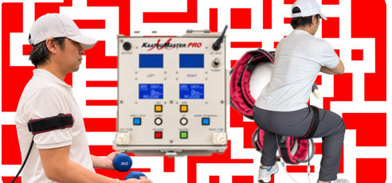
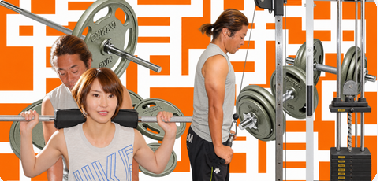
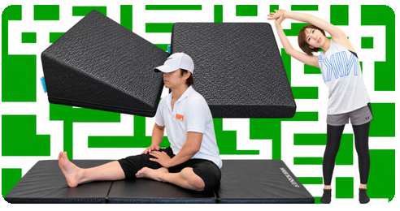
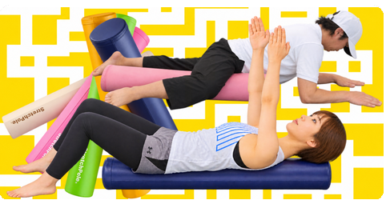

加圧トレーニング
専用ベルトを使用し、体力や目的に合わせて運動の負荷を調整します。
体験ページを見る ›
一人ひとりの目的や体力に合わせて、マンツーマンで丁寧にサポートします。

専用ベルトを使用し、体力や目的に合わせて運動の負荷を調整します。
体験ページを見る ›
ダンベルやマシンを使い、目的に合わせて筋力を鍛えます。
体験ページを見る ›
身体の状態に合わせて、筋肉や関節をゆっくり動かします。
体験ページを見る ›
無理のない動きと休息を取り入れ、身体をゆったり整える時間に。
体験ページを見る ›食習慣を見直す、12週間のサポートアプリ
食事を記録し、学び、振り返る。
自分のペースで食習慣を整えるための
12週間サポートアプリを制作しています。
毎日の食事と向き合い、無理なく続ける習慣づくりをサポート。
公開に向けて制作を進めています。
※アプリは現在準備中です。掲載内容は開発中の構想です。
トレーニングやセルフケアに役立つアイテムをご紹介
※商品画像・紹介リンクは、掲載商品が確定してから設定します。
初めての方は、体験トレーニングから。
HOPE代表 村田 健作
2006年に加圧インストラクター資格を取得。
スポーツクラブなどでの指導経験を経て、2010年に
宇部市でパーソナルエクササイズスタジオHOPEを開業。
運動経験や体力、目標、その日の体調を確認しながら、
一人ひとりに合わせたマンツーマンの運動を提案します。
初めての方も、自分のペースでご相談ください。
トレーニングや身体のケアに関する情報を発信しています。
運動が初めての方から、体力づくりを続けたい方まで。
運動施設の利用経験がない方も、目的や体力に合わせて無理のないペースで運動に取り組めます。
将来も元気に過ごすために、日々の健康維持や体力づくりを大切にしたい方が利用されています。
体重や身体の変化が気になり、運動を生活に取り入れたい方の目標づくりをサポートします。
姿勢を意識した運動やストレッチを通じて、身体を動かしやすくしたい方に。
今の体力に合わせたトレーニングで、筋力アップを目指す方にご利用いただいています。
公開中のブログから記事を一部ご紹介します。
2026年11月8日
2026年11月6日
2026年11月5日
2026年10月31日
2026年10月29日
2026年10月13日
2026年10月12日
2026年10月10日
加圧パーソナルエクササイズスタジオHOPE
所在地
〒755-0032 山口県宇部市寿町2丁目5-15
JR琴芝駅から徒歩約2分
駐車場：施設脇に車を1台停められます
琴芝駅からHOPEまで
※位置関係の案内図です。実際の地図は正式なリンクからご確認ください。
電話番号：0836-39-8200
営業時間：11:00〜22:00 ／ 完全予約制
HOPEのインスタグラム